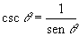

.

Descripción:
- Desarrolla, en conjunto con el
profesor, algunos problemas que implican el uso de funciones lambda.

Objetivos:
- Aplicar los conocimientos
sobre funciones lambda.
- Reconocer la importancia del
uso de funciones para el diseño de un programa.

Modalidad:

Instrucciones:
- Implementa las siguientes funciones, recuerda
que las funciones se definen antes de la función del main y del
script principal.

Ejercicios:
.
- La función lambda
pies_metros, cuyo argumento son
los pies y regresa su equivalencia en metros.
La relación de conversión entres estas dos unidades de longitud
es: 1 ft = 0.3048 mts.
Casos de prueba:
Input:
Cantidad en pies
Output:
Cantidad en metros
|
Input:
8.4
Output:
2.56
|
Input: 12.5
Output: 3.81
|
- La función lambda
metros_pies, cuyo argumento son
los metros y regresa su equivalencia en pies.
Casos de prueba:
Input:
Cantidad en metros
Output:
Cantidad en pies
|
Input:
10
Output:
32.81
|
Input: 32.5
Output: 106.63
|
- La
función lambda grados_radianes,
cuyo argumento son los grados y regresa su equivalencia en
radianes. Utiliza la constante math.pi de la
librería math.
- La
función lambda cosecante,
cuyo parámetro es el ángulo en grados y regresa la cosecante de
dicho ángulo.

Utiliza la
función math.sin(x) de la librería math, que calcula
la tangente del ángulo x especificado en radianes, por lo tanto,
para poder usar esta función, es necesario primero transformar el
ángulo en grados a radianes, para ello utiliza la función
grados_radianes implementada anteriormente. Como puedes ver, es
posible utilizar una función dentro de otra función. La única
condición que demanda el compilador, es que la función a utilizar
dentro, haya sido definida anteriormente.
Casos de prueba:
Input:
Ángulo en grados
Output:
El resultado de la cosecante
|
Input:
90
Output:
1.0
|
Input: 270
Output: -1.0
|
- La
función secante,
cuyo parámetros es el ángulo en grados y regresa la secante de dicho
ángulo.
..

Utiliza la
función math.cos(x) de la librería math, que calcula
la tangente del ángulo x especificado en radianes, por lo tanto
para poder usar esta función, es necesario primero transformar el
ángulo en grados a radianes como en la función anterior.
Casos de prueba:
Input:
Ángulo en grados
Output:
El resultado de la cotangente
|
Input:
180
Output:
-1.0
|
Input: 360
Output: 1.0
|
Guarda tus archivos como:
L11_Matricula.ipynb

Especificaciones
de entrega en Canvas:
- Formato de entrega: pdf
- Nombre de los entregables: L11_matricula.pdf
(Impresión de pantalla de tus programas con su ejecución)
- Medio de entrega: Se entrega en la sección de Laboratorio:
Funciones
|